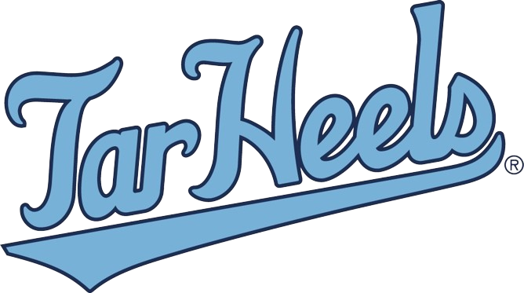

Home
What We Do
What We Look For
Apply
Resume
Contact
UNC Baseball Analytics
The UNC Baseball Analytics Team is looking for new analysts for the upcoming season! If you like baseball and statistics and want to work with one of the top college baseball programs in the country, this opportunity is for you!
Apply!
Meet Our Team!
Your browser does not support HTML video.
Learn More